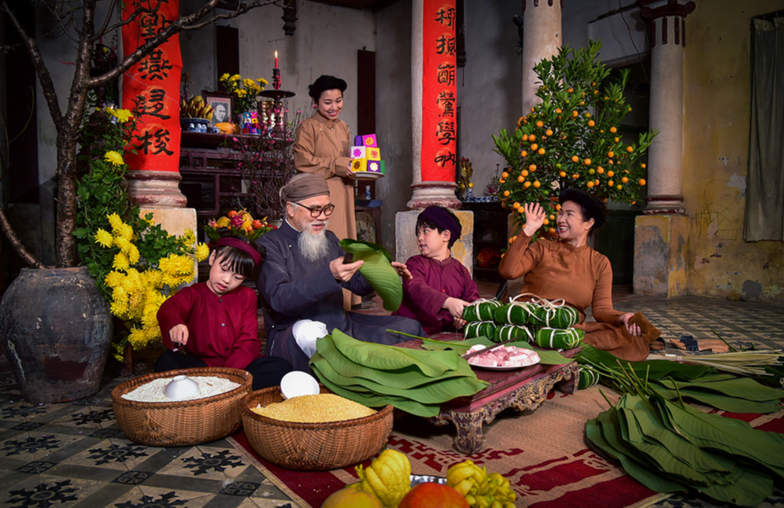
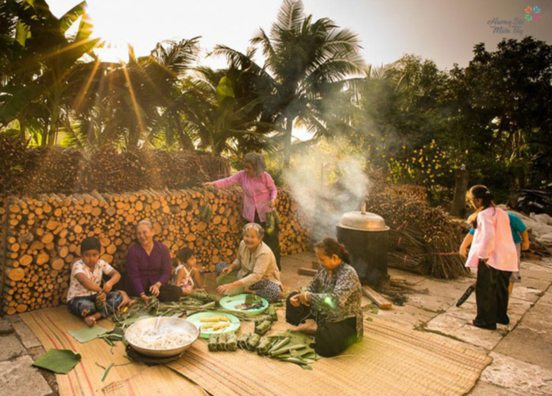
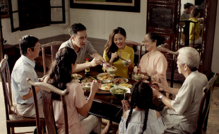

Mỗi độ xuân về, khi đất trời chuyển mình trong làn gió se lạnh hòa với nắng vàng mới, người Việt ở khắp mọi miền đều cảm nhận được một thứ không khí rất đặc biệt – đó là hơi thở của Tết Nguyên Đán. Tết không chỉ là một kỳ nghỉ lễ, mà còn là biểu tượng văn hóa, là sợi dây liên kết các thế hệ, là cội nguồn của sự đoàn viên và hi vọng. Từ bao đời nay, Tết đã trở thành hồn cốt của dân tộc Việt Nam. Trong nhịp sống hiện đại, dù cuộc sống có bận rộn đến đâu, Tết vẫn giữ nguyên giá trị thiêng liêng – thời khắc để mỗi người dừng lại, nhìn về quá khứ, sống trọn vẹn với hiện tại và hướng đến tương lai.
Khoảnh khắc trước Tết luôn là lúc đất trời như khoác lên mình tấm áo mới. Ở các thành phố lớn, những con đường được trang hoàng rực rỡ bằng đèn lồng, hoa xuân, câu đối. Mỗi góc phố, mỗi cửa hàng đều ngập tràn sắc màu. Còn ở thôn quê, không khí xuân lại mang nét bình dị mà ấm áp. Những gian bếp đỏ lửa nồi bánh chưng, tiếng nói cười của bà con gói bánh, mùi nếp mới hòa với lá dong xanh – tất cả tạo nên một bức tranh xuân mộc mạc nhưng chan chứa yêu thương. Không chỉ là chuẩn bị nhà cửa hay mua sắm, việc dọn dẹp cuối năm còn mang ý nghĩa xóa bỏ điều cũ kỹ, rũ bỏ lo âu để đón chào năm mới với tâm thế nhẹ nhàng và trong trẻo hơn.
Mùa xuân Việt Nam là bức tranh đa sắc: Miền Bắc rực rỡ với hoa đào hồng hào trong sương sớm. Miền Trung dịu dàng với sắc vàng ấm áp của hoa mai núi rừng. Miền Nam lại sống động với đường hoa, chợ nổi Tết, những gian hàng tràn ngập trái cây, bánh mứt. Đặc biệt, tiếng trống múa lân, tiếng pháo hoa đêm Giao Thừa cùng mùi trầm hương trong mỗi ngôi nhà khiến không khí Tết thêm trọn vẹn. Và trong chính mỗi người, mùa xuân cũng nở hoa. Nụ cười rạng rỡ, sự thân thiện, lòng bao dung dường như xuất hiện nhiều hơn trong những ngày đầu năm.
Có thể nói, giá trị lớn nhất của Tết không nằm ở bữa tiệc hay phong bao lì xì, mà ở tinh thần đoàn viên. Người đi làm xa trở về, người ở quê chờ đợi, những cái ôm, cái nắm tay, ánh mắt xúc động... tất cả tạo nên những khoảnh khắc khó quên. Tết cho ta cơ hội sống chậm lại: Ngồi bên mâm cơm gia đình. Lắng nghe câu chuyện của ông bà, cha mẹ. Gửi lời hỏi thăm tới những người thân quen. Chia sẻ điều tốt đẹp trong năm mới. Đó là giá trị mà không món quà vật chất nào có thể thay thế.
Trong thời đại công nghệ, Tết cũng có nhiều đổi thay. Những lời chúc được gửi qua mạng xã hội, mua sắm online phổ biến hơn, và nhiều gia đình có cách tổ chức Tết riêng phù hợp với nhịp sống mới. Tuy nhiên, dù cách thể hiện có khác nhau, tinh thần Tết vẫn vẹn nguyên: đoàn tụ – biết ơn – hy vọng.
Tết Nguyên Đán không chỉ là một dịp lễ, mà là dấu ấn văn hóa trường tồn. Mỗi chúng ta – dù là học sinh, sinh viên hay người trưởng thành – đều có vai trò giữ gìn và lan tỏa vẻ đẹp đó. Hãy để Tết mãi mãi là mùa xuân của yêu thương, là điểm bắt đầu cho những ước mơ, là nơi trái tim tìm về sau một năm bộn bề. Xuân đến – chúc mọi nhà an vui, chúc mọi người thành công và chúc mỗi ngày đều tràn ngập hạnh phúc.